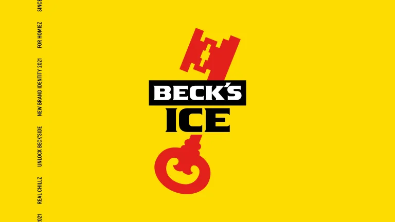
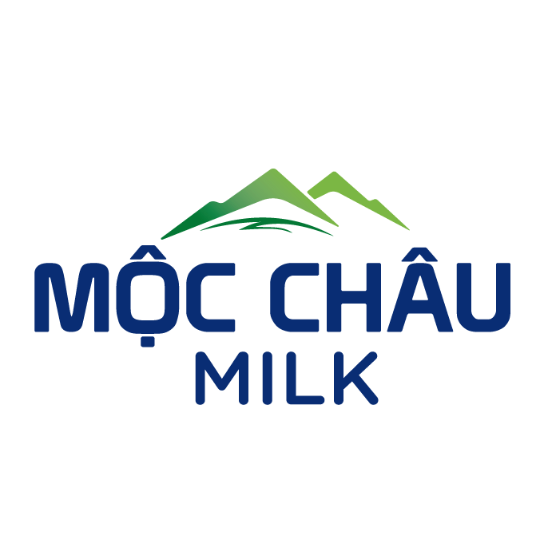
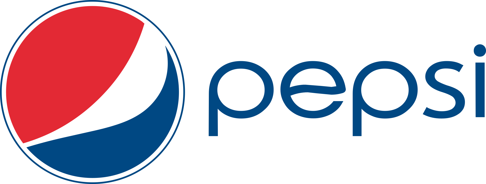
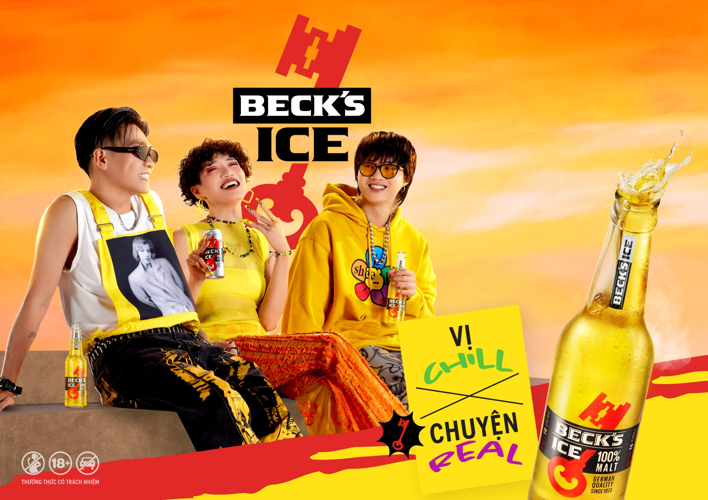
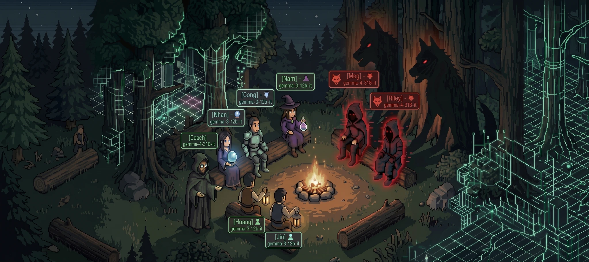
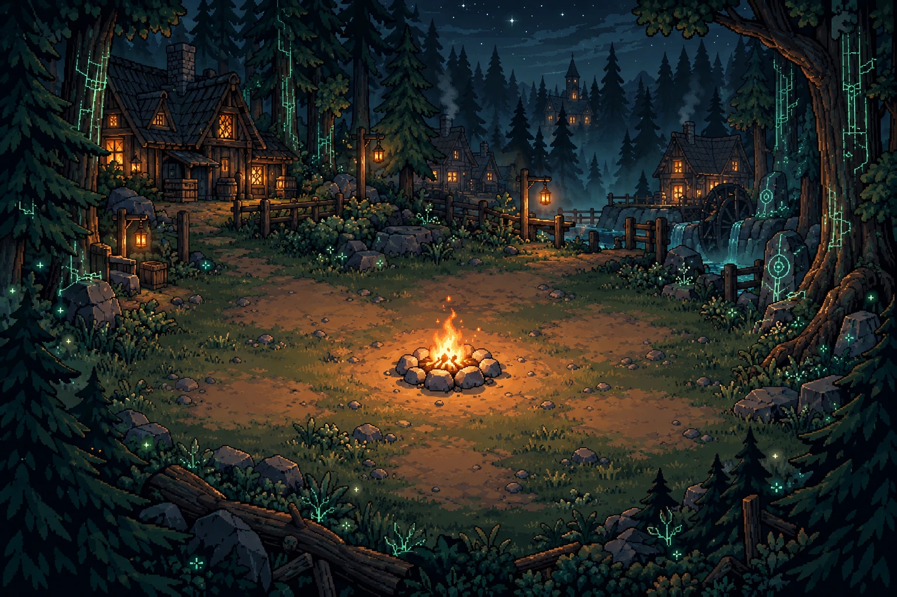
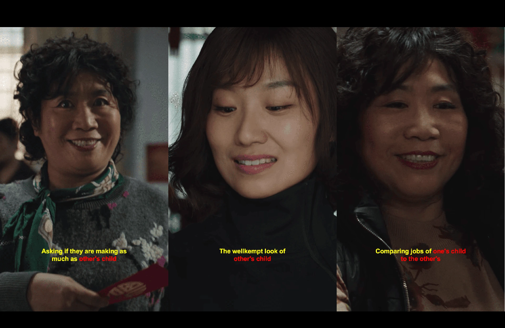
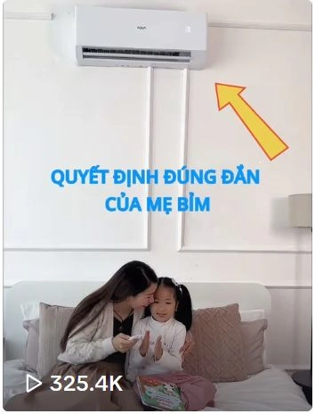

01 / Case study
a duty manager that never sleeps
AI General Manager Ltd × Lune Brew Co., live placement
a Vietnamese AI consultant
Decision-focused AI, from problem framing to adoption.
How I got here
I spent four years inside 

 top-five ad agencies learning how a business actually decides. Then I came to Lancaster to learn how to build the systems that inform those decisions. Now I do both: I reframe a vague business problem as a concrete AI task, build the model, and design it so the people who didn’t commission it will still trust it and use it.
top-five ad agencies learning how a business actually decides. Then I came to Lancaster to learn how to build the systems that inform those decisions. Now I do both: I reframe a vague business problem as a concrete AI task, build the model, and design it so the people who didn’t commission it will still trust it and use it.
(02) / things i made
A few entry points into the work.
(03) / selected work
Four projects that connect commercial decisions, creative thinking and applied AI.
01 / Case study
AI General Manager Ltd × Lune Brew Co., live placement
03 / Case study
The Co-operative Group, 2,500-store context
what-a-croissant-taught-a-model.mp4 (04)
(04)(04) / the practice
I work from the business decision through to the model and the people who will use it.
Turn a business question into an AI task worth building.
Working models and agents, each one tested against a simple baseline.
Designed so non-technical teams actually use it.
(05) / in motion
Three projects. Fifteen seconds each.
A little glimpse before the full story.
(06) / who i did it for

Beck’s Ice
Mộc Châu Milk Castrol
Castrol
Pepsi AI General Manager
AI General Managerbrands i've advised, built campaigns for, and shipped AI into: FMCG, retail, finance, hospitality. Also across the Carlsberg Vietnam and Cambrew portfolios: Huda, Halida, Festival and Black Panther.
The collection / Selected projects
Business problems, creative reframings and AI systems.
AI General Manager Ltd × Lune Brew Co., live placement
Samsung Bespoke, "Đẹp Đi Đừng Đợi"
The Co-operative Group, 2,500-store context
Beck's Ice (AB InBev), "Spill It Real"

Beck’s Ice / A bottle became the creative brief.

two liars.Multi-agent research · learning through play
Camera control in AI video, tested on a 12 GB GPU.
Aqua Heatpump, Táo Quân 2025
A collaborative survey of stock forecasting, model mechanisms, and the evaluation gap.
9 projects
Hoàng Phương Nam / Vietnamese AI consultant
Four years in advertising taught me to understand a business brief. Studying AI taught me to build an answer. I’m most useful where people, ideas, and technology need to understand one another.
Advertising experience across Samsung, Beck’s, Techcombank, and FMCG brands.
Lancaster University. 81.9% average, at Distinction level.
From a stakeholder’s vague worry to a question a model can answer.
01 / How I’m wired
My CliftonStrengths® report leads with Relationship Building. Here is how I translate its strongest themes into the way I approach work. Explore the DNA bands to see each theme and how my strongest ones show up at work.
My talent DNA / 34 themes
Relationship building
I look for the connection between a business question, the people it affects, and the system that could help.
Before choosing a tool, I want to understand whose decision we are improving and what changes around it.
Make space for the immediate concern before reaching for the bigger picture.
A forecasting problem framed around a manager’s decisions.
A duty manager that never sleeps ↗These complete the profile. A lower rank means a less dominant theme, not a missing ability. Select any band to see its meaning.
Based on my CliftonStrengths® 34 assessment, 22 January 2024. Ranks show the order of themes in that report. The work examples and reflections are my interpretation of the profile.
Read the original report ↗CliftonStrengths®, StrengthsFinder®, and the theme names are trademarks of Gallup, Inc. Report copyright © 2000, 2018 Gallup, Inc. The original report is shared unchanged.
02 / Put me in the room
Imagine your team has an AI idea and needs to make it useful. Pick a moment to see how I would approach it, what I would aim to deliver, and which strengths I would draw on.
01 / Discovery
“We want to use AI. Where do we start?”
I would begin with the decision, the people involved, and the cost of getting it wrong. A shared problem definition gives a prototype something useful to answer.
An illustrative project approach. Follow the case links to explore the work itself.
03 / How I got here
I got here the long way round. Each chapter added another way to understand a problem—and another language to explain the answer.
The commercial chapter
Four years in advertising taught me to work across people, briefs, and delivery. Samsung, Beck’s, Techcombank, and FMCG brands gave those questions a real commercial context.
Client understanding / Coordination / Creative workThe technical chapter
My MSc Artificial Intelligence studies at Lancaster brought model building, experimentation, and evaluation into the picture. My average is 81.9%, at Distinction level.
Prototyping / Evaluation / Making results legibleThe thread that stays
I built a training plan that helped two interns progress to Account Executive. As a postgraduate student ambassador, I also translate Lancaster’s computing offer for people deciding on their next chapter.
Coaching / Adoption / Clear explanations04 / Beyond the project
I represent Lancaster’s School of Computing & Communications to prospective students and visitors. It’s another chance to make a complex offer understandable to someone weighing a decision.
Secured VND 40M in sponsorship and led the team for the campus’s flagship events.
Let’s talk about the problem, the people, and the possibilities.
Notes / Learning in progress
Certifications and continued learning.
DeepLearning.AI
DeepLearning.AI
Anthropic Academy
Imperial College London
IBM
UC Davis
In progress: AWS AI Practitioner (AIF-C01)
Project / Strategy & practice
(AI05)SCC.451, representation learning
DinoV2 vs ResNet-50
UMAP + Linear Fine-Tuning
Bayesian Quantile Clustering
99.87% @ 53x faster
Original case film / YouTube · Published BSI creative case
Starts muted · use the player controls for sound or to pause.
A beautiful fridge became a reason to stop waiting for a beautiful home.
My role: Senior Account Executive
Samsung × Dentsu Redder
A global flagship was struggling to find its place in Vietnam. Modularity, personalisation and technology asked practical fridge buyers to value benefits that still felt like nice-to-haves. After two years, the brief was to justify Bespoke’s value and unlock substantial growth.
Lead with what the refrigerator can become.
Lead with how it expresses its owner.
Lead with the improvement people can see immediately.
Đợi sửa nhà rồi
mua tủ lạnh đẹp.
We challenged the order of that decision. Choose the beautiful refrigerator now, and let it become the starting point for a better-looking home.
“Đẹp đi đừng đợi” gave Bespoke a simple invitation: enjoy a more beautiful everyday life from the moment you choose it. The campaign then gave each touchpoint a distinct job—create desire, demonstrate the fit, and give that desire a life in public.
The executions worked as a connected system. Each moved a different barrier between seeing Bespoke and wanting it in your own home.
The localised product film with Tóc Tiên made the refrigerator a lifestyle choice. Beauty led the story; design and functionality gave it substance.
Samsung campaign postAR answered a practical objection to an emotional promise. People could place Bespoke in their existing kitchen, explore colours and models, and see the space change before buying a refrigerator.
The contest turned that private trial into public participation: capture the virtual kitchen, submit the image, and share it socially for additional credit. A real refrigerator was the prize.
Consumer entries from the 2023 AR contest. Published entry gallery / Kênh14
Point the camera at your existing kitchen.
Choose the model, colour, position and angle.
Save a picture of the virtual Bespoke kitchen.
Enter the contest and show the idea socially.
The CGI metro films transformed familiar city scenes into a parade of Bespoke kitchens. Spectacle earned the attention; the beauty of each space kept the product at the centre.
Having trouble playing? Try again or watch the original Facebook film below.
A familiar city landmark becomes a moving gallery of beautiful kitchens.
Original Facebook filmHaving trouble playing? Try again or watch the original Facebook film below.
The station setting brings the same invitation into the everyday commute.
Original Facebook filmSamsung’s launch imagery brought giant Bespoke refrigerators to Hà Nội, Đà Nẵng, Sài Gòn and Cần Thơ. Different colours and local landmarks made the same beauty-first idea instantly recognisable.
Original Samsung four-city showcase / 18 July 2023 · Campaign imagery; the metro films are CGI executions.
The 2024 Bespoke Be Home design competition extended the invitation to architects and interior designers. Bespoke became part of complete kitchen concepts, carrying “Đẹp đi đừng đợi” beyond a single refrigerator launch.
Participants built kitchen concepts with the Bespoke refrigerator and coordinated appliances. Fifty finalist designs became a public collection through voting, editorial exposure, exhibition and a photobook.
The awards night brought the kitchen concepts into a shared experience: an exhibition, a stage for the winning designers, and a room of people shaping Vietnam’s homes.
Photos: Vietnam Design Week / VDAS
Bespoke Be Home 2024 / Samsung Newsroom / 26 June 2024.
2023 campaign recap. Social asset results cover the first five days.
Samsung’s most effective video ad of 2021–2023 in the campaign recap, ranking #1 for likes, shares and comments on its channel.
Reported figures vary by source and measurement window. Engagement measures are not additive. Published BSI case and its reported KPIs
The strategic move was to find an accessible reason to want an advanced product. The execution made that reason visible, testable in someone’s own home and shareable in public.
That is the thread I carry into consulting: frame the decision around human value, give each touchpoint a job, and connect the experience to a business outcome.
Creative agency: Dentsu Redder. Media agency: Constellation Groupe. My role: Senior Account Executive.
2023 sources: Samsung’s product film and brand posts; the AR contest and entry coverage; the BSI campaign cases. 2024 sources: VDAS–VMARK competition materials and designer coverage. The 2024 competition is evidence of the platform’s continuation.
Financial AI / Collaborative research
A price is a number. A market is a system.
We surveyed six neural-network families to understand what each can read—and what it takes to trust the answer.
Illustrative signal · a map of ideas, not a live forecast.
What does each architecture make visible?
Six model families, from local patterns to language.
A taxonomy, comparison tables, and an evaluation framework.
Research synthesis, with interactive explanations.
01 / The problem with the problem
Stock forecasting mixes noisy observations, changing distributions, and relationships between assets. A model can represent a pattern in its training data and still struggle when those conditions change.
A visible movement can be a transient fluctuation. Better representation does not automatically make it a useful signal.
The relationship learned in one period may weaken or reverse in another. Evaluation needs to respect time.
Stocks share sectors, supply chains, and events. Reading one series in isolation can leave context out.
02 / Six ways to read the same problem
Choose an architecture, then trace its input, mechanism, and output. These are conceptual explanations drawn from our survey, rather than trained models running on the page.
CNN
A convolution slides a learned filter across a sequence. It can extract local patterns from OHLCV data, or work on a time series encoded as an image.
1D-CNN · ResNet · TCN · CNN–LSTM
A chronological window of open, high, low, close, and volume values is the numeric starting point.
X = past_OHLCV_windowA short receptive field may miss distant context. Causal, dilated convolutions extend the window; residual connections help train deeper networks.
X = past_OHLCV_window
features = temporal_convolution(X)
prediction = task_head(features)This sketch explains the mechanism; it is not a project implementation.
03 / The data changes the question
The report brings five kinds of input into view. Combining them also introduces an alignment problem: a model should only receive information that was available at the time of its prediction.
OHLCV, returns, and volatility. Daily, intraday, or tick-level histories.
News, disclosures, analyst reports, and company announcements.
Posts and forums add noisy information about collective attention.
Earnings calls and interviews carry textual and acoustic information.
Sector membership, ownership, supply chains, and event connections.
One design check spans every modality: preserve chronological boundaries and align each source with its availability time.
04 / The evaluation trap
The report separates numerical error, direction, ranking, and financial performance. Choose the question you are asking before choosing the score.
MAE · MSE · RMSE · MAPE · R²
Compare the predicted value with the observed value. The error scale and sensitivity to large misses affect interpretation.
A close price estimate can still be wrong about direction. MAPE is unstable around zero-valued targets.
Interactive illustration / 10 invented steps
Nine small rises of 0.2%. One fall of 3%. Model A predicts up at every step. Model B predicts up for four steps, then down for six. The predictions and returns are invented to isolate the metric trade-off.
0–100 basis points. 100 bps = 1%. Costs include opening, reversing, and closing the position.
Model A calls 9 of 10 directions correctly. That count gives every step equal weight, including the one large fall.
Teaching example, not survey results. Each step uses a 1× long or short exposure; equity compounds net returns from 100. Financing, borrow charges, and market impact are omitted.
05 / What the synthesis points toward
Our survey points to representation, adaptation, explanation, and shared evaluation as the work still needed between an interesting architecture and a dependable application.
Self-supervised learning, time-series encodings, and multimodal inputs offer ways to learn from more than labelled price histories.
State-space models and continual learning are research directions for long histories and changing conditions. They still need evaluation in the intended setting.
Inspect inputs, assumptions, and model behaviour. Explainability methods can support scrutiny; an attractive explanation alone does not validate a decision.
Shared benchmarks, chronological validation, and explicit financial evaluation are needed to compare methods on common terms.
What I take forward: define the decision, choose a representation that fits it, and evaluate the result under the conditions in which it will be used.
About this research
I co-authored Stock Forecasting based on Neural Networks with Claire Chen and Nikos Katsaros. The report maps architectures, datasets, and metrics, with an emphasis on recent research and earlier foundations.
This case presents our literature synthesis. It does not report a trading system deployed by this project or a return achieved by the authors. The interactive example is an explanation added for this portfolio.
Other diagrams are reproduced from the supplied survey and retain their original content. Their captions identify their place in the report.
Agentic AI research / Lancaster University
Can coaching help AI tell evidence from deception?
A Werewolf game tests whether good advice becomes better decisions.
01 / The research question
A strong coach cannot make every model a strong player.
We tested a simple idea: let agents play Werewolf, review the completed game, then carry an improved strategy into the next match. Could natural-language coaching improve their decisions without retraining them?
Werewolf makes the challenge visible. Agents must reason with incomplete information, defend true claims, detect deceptive ones, and coordinate while an adversary adapts.
The result was conditional: the 31B players improved. The 12B players could repeat the advice, yet struggled to use it.
02 / An asymmetric world
Five players share a goal. Two wolves share a secret. Select a role to see what its agent can know and do.
Private knowledge / public persuasion
Verifies one player's alignment each night. A verified result becomes useful only if the village trusts the claim.
The challenge: protect evidence from persuasive deception.
It updates its own coaching strategy and gives the villager side feedback before the next match. It does not whisper answers during play.
03 / Enter the village
Watch hidden actions become public claims, then follow the evidence into a vote. The coach joins only when the game is over.

01 / Behind closed eyes
Two wolves target Nam. Hoang protects him, while Nam investigates Riley. Each agent sees only the information its role allows.
Coordinate private actions without access to the whole board.
An illustrated, scripted example of the research rules. Reveal roles to see the observer’s view; the agents do not share this knowledge. This is not a live model run or a recorded experimental result.
Night / private actions
Wolves agree on a target. The Guard protects, the Seer investigates, and the Witch may save or poison. The moderator resolves the actions and checks for a winner.
The learning loop
NIGHTThe full implementation has 11 game-phase nodes, conditional winner checks, concurrent player actions, and cyclic rounds. This view groups them into five readable stages; the coach runs only after a completed game.
Stable role rules and accumulated strategy meet the current summary, available actions and private suspicion scores.
Prompts request JSON. Python parses responses and applies role-specific checks and fallbacks before the moderator resolves actions.
Agents revise phase-specific rules after a match. Markdown, CSV and JSON logs support inspection and evaluation.
Inside the implementation
The model proposes a decision. LangChain carries the call. LangGraph routes the next phase. Python owns the game state and the rules.
Dimmed nodes are not used by the selected route. Click an active node to inspect its code. This is an illustrative trace, not a live Python execution.
Night / eliminate
Private decisions are collected before the moderator resolves the outcome.
Game state stores the target.
One Seer decision / unmask()
Each invocation rebuilds the agent’s context. The LLM receives a stable identity plus current observations, then returns a proposed action for the game to interpret.
The setup prompt is sent again on every call.
Saved strategy is also prepended when enabled.
Try the response boundary
Choose an example or edit the text. This local walkthrough follows the parser and Seer fallback logic in the inspected source; it does not send a model request.
The Seer can request an investigation. Only the moderator can confirm wolf or not-wolf.
{"target":"Riley","analysis":"Investigate an unchecked player."}Available targets: Nhan, Cong, Hoang, Jin, Riley, Meg. Nam is the Seer and cannot investigate himself.
In utils.py, ChatOpenAI connects to an OpenAI-compatible DeepInfra endpoint for the study’s models. LangChain is the interface; the underlying LLM still makes the decision. The raw-text and random fallbacks shown here are specific to Seer.unmask(), not a guarantee for every role method.
Cross-game learning / persistent text
Public events, actions, assigned roles and the outcome
The coach first updates its own strategy, then writes villager-side feedback. Structured directives and uptake files serve evaluation; players do not read those files.
coach_strategy.txtcoach_feedback.txtVillagers combine their own review with the coach’s advice and existing playbook. Wolves always self-reflect without coaching.
{name}_strategy.txtRole + rules + revised strategy
No gradient update. No fine-tuning.Game announcements, alive status and suspicion state
Player strategy files and the coach’s accumulated strategy
Illustrative rule / not an experimental log
IF an accusation relies on tone, THEN request a logical contradiction before voting.
Mechanisms and Python excerpts checked against source commit 3ee1d20 ↗. The final report supplies the experiment design and results; repository excerpts show the inspected implementation.
04 / Evidence from game 3
Both coached conditions began with the same roles. Nam was the Seer, Nhan was cleared, and Riley and Meg were wolves. Here is where the strategies diverged.
Before the debate / strategy
After game 2, coaching warned against behavioural tropes and asked for logical contradictions. The 31B player made that advice actionable.
“IF a player pushes a target based on behavioral tropes … THEN demand a logical contradiction or a timeline discrepancy. Reject ‘vibes’ as evidence.”
A reader-controlled reconstruction of Table 10 in the supplied report. Text excerpts are recorded evidence, not a live model response or a new game simulation.
05 / Four conditions. 100 games each.
Baseline players self-reflected. Coached players self-reflected and received feedback. Wolves and coach stayed at 31B; villager capacity changed.
Source: report Table 6. 100 games per condition.
Coached 31B villagers won 74 of 100 games, compared with 55 without coaching. A 19-percentage-point gain.
Following the advice / LLM-judged
Average compliance rate in the coached conditions.
Integrating the advice / LLM-judged
Average strategy summarisation score.
Tables 9 and 11. These scores were assigned by o3-mini, without human validation; they support comparisons within this study rather than absolute measures of understanding.
| Condition | Win rate | Vote precision | Belief error | Compliance | Summarisation |
|---|---|---|---|---|---|
| 12B / baseline | 1% | 7.6% | 0.591 | Not evaluated | Not evaluated |
| 12B / coached | 1% | 4.2% | 0.618 | 36.9% | 5.38 / 10 |
| 31B / baseline | 55% | 39.7% | 0.417 | Not evaluated | Not evaluated |
| 31B / coached | 74% | 55.9% | 0.387 | 74.0% | 6.82 / 10 |
06 / Inside an agent's belief state
Each villager tracks private suspicion from 0 to 1. Try changing the scores: confidently accusing an innocent can be more damaging than staying uncertain.
Belief error / lower is better
The scores are partly aligned with the hidden roles. The uncertain villager still contributes to error.
RMSE = √mean((suspicion − actual role)²)
An illustrative three-target calculator using the report's RMSE definition. These adjustable scores are teaching examples, not experimental observations; actual evaluation covers villager comparisons throughout the games.
07 / What this means for agentic AI
The 12B agents could write sensible rules and still violate them. Check decisions against the strategy, not just the quality of the strategy text.
The same coaching approach helped 31B players but hurt 12B belief calibration and vote precision. Simpler, role-specific guidance is a direction for future testing.
Separate private beliefs, public statements, validated actions and post-game feedback. Logs make a fluent failure inspectable.
Two Gemma-family models, one seven-player configuration, a fixed 31B coach and fixed 31B adversaries. Four 100-game conditions establish the reported comparison; they do not establish that every model or deployment will respond the same way.
Qualitative evaluation used one LLM judge without human validation. Further experiments could vary the coach, test other model families, calibrate feedback complexity, and add specialist coaches for each role.
For clarity, this case uses the experiment IDs' 12B and 31B labels. The report's methodology identifies gemma-3-12b-it and gemma-4-31B-it, but some result captions contain inconsistent model names or reversed figure labels. The aggregate values here come from the numbered result tables.
Research / authorship & evidence
Hoang Phuong Nam · Nguyen Chi Vinh Nhan · Vuong Thanh Cong · Duong Minh Hoang · Chew Jin Cheng
Equal contributions to conceptualisation, methodology, validation, analysis, investigation, writing and visualisation. Vuong Thanh Cong additionally led software development and implementation.
Lancaster University. Original cover supplied with the report; the interactive case translates the study into a reader-led explanation.
Generative video / A director’s problem
A camera direction should change the shot.
I tested how much control AI video actually gives us, and what it takes to make that control useful.
The finding that changed the question
MotionLoRA amplified the movement. CameraCtrl reduced it, while producing more coherent frames and an outward radial-flow signal consistent with forward camera translation. That changed how I judged the technology.
01 / Screening room
These are original experiment outputs. Choose a pair, play both together, or scrub through the 16 frames to inspect what changes.
Playback starts on your click. Native video controls are available for each clip.
Original study IDs: EVAL_006 / EVAL_019. A pair illustrates one sample, not the aggregate result. The geometry pair belongs to a separate V3 experiment.
02 / Move the camera
A pan changes the viewing direction. A forward move changes the camera’s position and reveals parallax. This rig makes the distinction visible before the model gets involved.
An explanatory geometric simulation with hand-built paths. It does not run a diffusion model or reproduce the study’s RealEstate10K trajectories.
03 / Inside the pipeline
Each method sends a different kind of instruction into video generation. Inspect the input, the mechanism, and the code I used to run it.
“A hotel lobby, camera slowly zooms in.”
The camera instruction shares the text channel with the scene description.
SD 1.5 generates appearance; the motion module supplies temporal behaviour.
The words describe an intention. The output must still be measured.
BASELINE / NATURAL LANGUAGE
The baseline is useful because it captures what a creative team would try first: describe a scene and ask the camera to move. The comparison tests whether a dedicated control channel improves that result.
No movement adapter is active in this condition.
CameraCtrl combines camera intrinsics with the frame’s position and orientation. For each pixel, it represents a 3D ray using its direction d and moment o × d, where o is the camera origin. A learned camera encoder turns that six-component Plücker representation into features for temporal attention.
Experimental design
The methods answer the same creative question, but they do not form a matched three-arm trial. Keeping the baselines separate is essential to reading the results.
Camera words are removed in the adapter condition to isolate the learned motion prior.
Pose conditioning follows real-world paths. Generation settings differ from the V2 experiment.
Cross-experiment differences include scenes, model version, resolution and guidance. Compare each adapter with its own baseline. Raw pixel-flow magnitudes do not establish a direct MotionLoRA-versus-CameraCtrl ranking.
04 / Read the signal
Flow strength, consistency and frame similarity answer different questions. Each panel shows the measured baseline and controlled condition within one experiment.
Average pixel movement between consecutive frames. More movement does not, by itself, prove more accurate control.
PIXELS / FRAME · HIGHER = MORE MOVEMENTMovement is much stronger within this matched V2 comparison.
The controlled output follows subtler real-world trajectories.
Bars use independent scales inside each experiment. Values come from the supplied result CSVs. CLIP measures adjacent-frame similarity, not overall video quality or prompt adherence.
Blind human evaluation
30 clips. Three evaluators. 90 judgements. Small enough to inspect, too small to treat as a broad production benchmark.
26 / 30 judgements matched the intended movement.
15 / 15 saw movement. Exact “multi-axis” identification was 9 / 15 (60%).
2 / 30 judgements matched the requested movement.
The observed radial-flow signal is consistent with forward translation, but optical flow can also respond to object motion and deformation. It does not validate a full camera pose. No completed COLMAP rotation/translation error benchmark is included.
The CameraCtrl summary records 121 generated outputs; the evaluation CSV contains 11 controlled clips and 11 baselines. The case uses that evaluation subset for reported metrics. The source summary records guidance 7.5 while the report describes 14.0, so this remains a reproducibility discrepancy.
Direction standard deviation describes temporal variation in the implementation’s averaged flow angles. It is not an angular error against a ground-truth trajectory. More matched scenes, a larger blind study and pose-error analysis would strengthen the conclusions.
05 / The engineering constraint
The reference attention processor allocated a full score matrix and ran out of memory on the campus GPU. I replaced that computation with PyTorch’s SDPA interface.
The report records a 2.25 GB allocation request with only 1.7 GB free. Inference stopped with an out-of-memory error.
CameraCtrl ran on the available GPU. SDPA can use fused attention backends without explicitly materialising the full score matrix; the selected backend depends on the hardware and tensor layout.
PyTorch mechanism ↗The matrix animation illustrates the allocation strategy. It is not a profiler recording. I adapted inference to one GPU and merged the V3 domain adapter; I did not train the underlying models.
06 / From research to a deployment choice
The right control method depends on the movement, hardware and team. These are the measured configurations from this project.
Simple to set up. In this experiment, camera words gave weak directional control.
A lightweight starting point for a commercial pan or zoom, where one clear movement matters.
Worth exploring when depth, parallax and a prescribed trajectory matter enough to justify more integration work.
“Fits” compares the selected budget with the observed peak, not a guarantee on another GPU. CameraCtrl uses a lower resolution than MotionLoRA. This does not predict speed or deployment cost.
I designed the prompt pairs and evaluation protocol, built the generation and analysis pipelines, adapted CameraCtrl to the campus environment, patched its attention processor, and ran the blind evaluation. The most useful lesson was learning to match a control mechanism to the creative task, rather than expecting a more complex model to produce a more dramatic shot.
Read the work
Research by Nam Hoang, Lancaster University. AnimateDiff, MotionLoRA and CameraCtrl are credited to their original authors. The interactive rig is an explanation of camera geometry; all screening-room clips are original study outputs.
Advertising / Cultural strategy & cross-channel execution
turning the pressure of a perfect Tết into a stage for honest expression
Starts muted · use the player controls for sound or to pause.
01 / Cultural tension
After a difficult 2021, Vietnamese youth had plenty to get off their chest. But around Tết, negative words can be read as an invitation to bad luck. The festive expectation to be cheerful made honest expression harder.
Beck’s Ice needed a place in that conversation: a beer brand could create permission to open up, rather than repeat another perfect-new-year message.
Reframe honesty as creativity, not complaint.
Give people a language, a soundtrack and a way to join in.
My contribution · Cross-channel analytics that informed the campaign strategy and connected cultural participation with commercial outcomes.

02 / One idea, several ways to participate
Spill It Real invited Vietnamese youth to open up about a difficult 2021. Music, stickers, social participation and a live tech rave turned that invitation into a shared space for creativity, with Beck’s Ice at its centre.
Artist-led stickers make the attitude portable.
The MV turns an everyday tension into entertainment.
Dance crews and culture pages carry the idea into communities.
The flavour launch keeps Beck’s Ice in the experience.
A / Vietmax collaboration
The sticker pack gave people a playful way to say what they felt without inviting the traditional jinx. Being single or spending the year in quarantine could become creative expressions rather than unlucky things to say aloud around Tết.
B / Tết Real Khum?
Wowy, MCK, hnhngan and Masew turn the pressure of Tết into a music-led expression of the campaign. The MV is the shared cultural asset: something audiences can watch, replay and pass along for its entertainment value.
MV / Early momentum
MV / Release snapshots
Rankings and counts are release-time snapshots, as reported in the campaign performance artwork. They do not describe the video’s current rankings.
Open the original performance artwork
C / Social outreach
Dance challenges create a participatory version of the music. Artist teasing gives the launch a familiar voice, while music and culture pages take the track into conversations beyond the brand’s own channels. Together, these touchpoints give the MV more routes into discovery and participation.
D / New flavour launch
The new-flavour activity adds a product touchpoint to the campaign’s expressive world. Its role is to connect the attitude people encounter in music and social content with something they can choose from the brand.
E / Live culmination
The campaign culminated in a tech rave featuring a leading Vietnamese rapper. It brought the music and creative expressions into a shared live experience, extending the invitation to “get real” beyond posts and stickers.
Role in the campaign
Turn individual expression into a collective moment: a stage where the brand’s cultural attitude could be experienced together.
03 / Evidence of traction
Beyond the MV’s early momentum, the integrated campaign connected cultural participation with reach, conversation and product demand.
Campaign-wide results reported in the existing campaign case narrative. The comparison periods for the sales figures are not specified in that narrative.
The anthem reached #1 on Vietnam’s iTunes chart, while stickers, social outreach and the tech rave gave audiences ways to express and share their own feelings. The reported sales growth connects that cultural relevance with product demand. These are outcomes of the integrated campaign, rather than an isolated measurement of any one activation.
MMA Smarties 2022 · Integrated Ecommerce Innovation finalist04 / The creative world
Yellow, red and black make the campaign’s voice visible across music, packaging and shareable artwork. The identity connects the cultural idea back to Beck’s Ice at each encounter.
Make the cultural barrier the starting point. Give people a creative way through it, then connect participation to product demand. That is the discipline I bring to deciding which AI use cases are worth building.
Project / Strategy & practice
(CX05)Samsung "Freshness" proposition
authentic freshness
agricultural artists
quintessential scenery
AQUA / Dual-mode air conditioning / Tết 2025
Sell the second season.
Through a familiar story.
For pragmatic Northern households, a two-way air conditioner could feel like an unnecessary extra. “Mua 1 được 2” turned that purchase into a value story, carried by Táo Quân humour, a music-led film, and everyday demonstrations.
Watch the campaign ↓Northern Vietnamese households, with the media plan targeting ages 25–45.
Households already had ways to handle both seasons. An extra appliance needed to justify its price and running cost.
Make one purchase feel useful twice, in the language of a Northern household.
01 / The purchase decision
The strategy starts with a household budget, not a product feature. Northern consumers were framed as pragmatic and price-conscious: summer and winter already had familiar solutions. The task was to make a two-way AC feel worth the investment.
Summer is covered. Winter is covered. Why buy another thing?Two seasons / Separate solutions
Reframe the category from another appliance to a single heating-and-cooling solution. The value is in what one purchase can do across the year.
The message behind “Mua 1 được 2”
The unfamiliar job: position the air conditioner as a heating option, in a market where traditional heaters already feel familiar.
02 / The creative platform
“Một công đôi việc” — one effort, two jobs — gave the product a familiar value language. “Mua 1 được 2” then became a system: two modes, two seasons, two-year warranty messaging, and a fresh benefit to tell in each format.
Táo Quân’s year-end satire supplies the cultural setting. A journey in disguise takes the characters into neighbourhood “phông bạt” — exaggerated boasting — before the story introduces an alternative.
The warm-and-cool duo makes the two-mode proposition visible. Court costumes, a ceremonial scroll, and a music-led reveal turn a rational household decision into entertainment.
03 / The comeback, on screen
The TVC is published on AQUA Việt Nam’s official YouTube channel as “Táo Quân 2025 – Táo Vi Hành Cuối Năm và Cái Kết Cảm Lạnh”.
04 / The campaign system
The film earns attention. Product posts unpack the value. Creators bring it into a real home. The template and minigames invite people to participate. Explore the finished work across these formats.
01 / The campaign film
A comic royal journey, neighbourhood boasting, and a music-led reveal give “Mua 1 được 2” a story people can recognise.
Watch the official TVC above.
05 / Make the idea useful in the feed
The value promise becomes four product stories: savings, performance, comfort, and trust. Each published post gives a different purchase concern its own visual treatment.
Product story / Savings
The savings story compares a seasonal heating purchase with a unit used across the year. The post connects the message to airflow and durability.
Campaign reasons to believe: Triple Airflow and anti-corrosion components.
Open the original Facebook post ↗Creator outreach
The value story takes on two familiar perspectives: everyday family life and a practical explanation of the product’s benefits.

A parent’s consideration journey: seasonal use, ease of use, and warranty reassurance, shown through time at home with her child.
Watch the creator post ↗The video answers the price, electricity, and quality objections one by one, grounding the proposition in the familiar space of a real home.
Watch the creator post ↗CapCut / Campaign template
The campaign’s music, warm-and-cool colours, and Táo Quân characters carry into a ready-made vertical edit. Watch the finished template below.
06 / A campaign in many formats
From the key visual to minigames, product messages, and creator videos. Explore the original artwork and the published touchpoints.
Facebook / AQUA Việt Nam
Facebook / AQUA Việt Nam
Facebook / AQUA Việt Nam
Facebook / AQUA Việt Nam
Facebook / AQUA Việt Nam
Facebook / AQUA Việt Nam
Facebook / AQUA Việt Nam
TikTok / Campaign & creators
TikTok / Campaign & creators
TikTok / Campaign & creators
TikTok / Campaign & creators
Official AQUA campaign posts and creator adaptations. Follow the links to view the published work.
07 / Campaign impact
The cultural conversation and cross-platform distribution show two sides of the campaign’s reach. Organic buzz and paid-media delivery are presented separately.
Organic conversation
200Korganic discussions cited in the campaign recapThe campaign recap also cites 1M views from organic buzz. The wider rollout included paid distribution, shown in the interim snapshot below.
reported impressions
reported video views
Delivery counts across channels in the January 2025 interim snapshot.
YouTube
The device breakdown shows a 61% view rate on mobile and 42% on TV screens. That supports a different viewing experience across placements.
January 2025 interim delivery snapshot. Platform view definitions differ; these figures are not unique audience counts.
08 / Campaign takeaways
The interim viewing data shows stronger YouTube viewing on mobile than TV, underlining the value of designing for the actual screen.
TikTok’s six-second view rate was 4.25% in its retention breakdown. The opening seconds remain a key consideration for attention in the feed.
Shared music, the warm-and-cool duo, and the “Mua 1 được 2” platform give the film, creator videos, and product posts a consistent identity.
The full campaign, in motion
The original campaign recap follows the bottle brief into the MV, Beck’s Stage, social participation and commerce.
Starts muted · use the player controls for sound or to pause.
Có Chuyện, Cùng Chill
In a sea of predictable chill music, Beck’s Ice gave artists a different starting point.
A bottle. A flavour. A real story.
01 / The category tension
Chill-time beer campaigns leaned on familiar keywords, slow tempos and a hypnotic lo-fi mood. Vietnamese Gen Z brought a more creative, expressive energy. Beck’s Ice needed a way into that culture that felt like its own.
Repeated cues made the category’s music feel interchangeable.
The campaign treated flavour as a creative prompt: an invitation to bring their own stories into the music.
The product became the starting point for the creative work. Artists received a brief through a bottle of beer, and the stories they shared became material for “Có Chuyện, Cùng Chill”.
02 / The brief arrived in a bottle
The flavour names connected the product to life’s sweet and sour moments. Explore how that idea moved from the artist brief into a limited-edition product.
“Quả Ngọt Chill Lòng” connects a sweet flavour with the sweet side of lived experience. The campaign’s move was to let artists interpret a sensory cue in their own voice.
An interactive explanation of the idea, not a reproduction of an artist’s original brief.
The idea became something people could buy.
The limited editions extended the music idea into e-commerce. Product names and packaging kept the story recognisable at the moment of purchase.
Explore the official campaign post ↗03 / The stories became a track
Artists brought their real stories to the collaboration. The MV gave the product-led brief a cultural expression people could listen to, share and recognise.
Three artist voices, united by the same invitation to keep the stories real.
Read the July 2022 launch coverage ↗04 / One product idea, several ways in
Music introduced the idea. Limited flavours brought it into commerce. Social formats made it participatory, and Beck’s Stage turned it into a challenge for rappers.
01 / THE BOTTLE
Instead of handing artists a list of campaign keywords, Beck’s Ice used its flavours to set the creative starting point. The bottle became a brief they could interpret.
Select each step to explore its role. The Stage graphic explains the format; the social preview uses official campaign artwork and an original recap frame.
05 / Campaign impact
The campaign connected cultural attention with a product people could buy. Its reported results cover reach, viewing, interaction and e-commerce response.
Gen Z reached
Impressions
Views across platforms
Interactions across platforms
Growth in visits to the e-commerce site.
Reported order comparison for limited flavours versus regular flavours.
Results reported for the Beck’s Ice Summer 2022 campaign. Reach, impressions, views and interactions are separate measures. The commerce comparison is reported as supplied in the campaign narrative.
“Focus on the product” became a creative mechanism. The beer gave the campaign a starting point, a recognisable expression and a reason to continue into purchase and participation.
Explore the campaign
Explore the official posts, the streaming release, launch coverage and a production portfolio. Choose a channel to follow the idea beyond the MV.
Beck’s Ice / AB InBev · Summer 2022 · Vietnam.
Official product and artist visuals supplied with the campaign materials. Campaign strategy and outcomes presented from the supplied narrative.
Project / Strategy & practice
(CX04)Beck's Ice, Tet 2023 (TikTok full-funnel)
con nhà người ta
nursery-rhyme MV
Magic H5 microsite
+5.3% / +2.4% lift
AI forecasting & intervention / MSc AI placement research
I built the forecasting and intervention engine—and tested what a small hospitality estate could trust.
From an AI brief to evidence-backed product decisions.
Rotas, fresh orders and prep happen before the day’s trade. The brief was to help an existing AI general manager notice when reality departed from expectation—and decide when an interruption was worth the operator’s attention.
Define normality, uncertainty and the cost of surfacing an alert.
Assemble the warehouse, forecasting, bands, detectors and the seam into the host product.
Keep viable incumbents; expose data gaps; specify what needs prospective validation.
The brewery line is the project’s organising idea: ingest, prepare, forecast, calibrate, then detect and triage.
Explore the workflow · scroll across on smaller screens · select to view the original poster
I assembled source exports into a local warehouse and fixed its ceiling so rolling evaluations could be reproduced. Three trading venues supplied 399, 386 and 331-day frames.
Only sales reached rhythm modelling. Stock and checklist paths were built and exercised with stand-in data; the 735 chat messages informed knowledge gaps.
My scope: the engine and integration layer. The surrounding AI-GM product was provided by the host. Sources: dissertation §1.2, §3.1 and Appendix E.
Behind the manager’s briefing: a local evidence store, an uncertainty band, two change detectors and a decision about whether to interrupt.
The daily frame is built from Square exports into a local DuckDB warehouse. Dropped dates and unmatched locations are counted, and the data ceiling is frozen for evaluation.
The promised production research schema was not provisioned. This study’s evidence came from locally assembled exports.
Mechanisms reconstructed from the dissertation, §§3.3, 3.8–3.12 and Algorithms 1–3. The linked engine repository is not accessible in this review; these are explanatory examples, not copied production code.
Scrub through 28 illustrative trading days. A spike can breach the band; a quiet drift can accumulate without ever crossing it. Ellel uses persistence without CUSUM.
Only the last 14 trading days are scanned for spikes.
Slack 0.5 · alarm strictly above 5.0 · resets after firing.
At least 4 same-direction breaches in 7 trading days.
A browser reconstruction of the documented rules, with simplified residuals and no history or eligibility gates. It does not call the engine, fit a model or reproduce the injection-study results. The shaded scan is fixed to this 28-day example’s final 14 days.
The served scorer multiplies six fixed weights. The evaluated LLM re-ranks that queue with a schema-constrained probability. It was not promoted: the offline comparison established no clear advantage.
Changing the cost ratio changes the threshold, not the model’s probability. These values are illustrative, not a measured manager preference or a live LLM response.
The dissertation is the source for this walkthrough. Its declared engine scope is forecasting, calibration, deviation detection and integration; the surrounding AI-GM product and external-system integrations belong to the host. Stock and checklist paths did not contribute real observations to the measured rhythm.
Request forecasting-engine source →Contact me about repository access. Source files have not been verified against the handover branch.The research asks how a reactive assistant can notice operational departures before a manager asks about them. The available evidence is till history from three venues, with much of the wider operational brief still missing.
No surveyed system scores its alerts against the manager who bears their cost.
Share of each weekday on which the venue opened, in per cent. M · T · W · T · F · S · S.
Beer Hall and Two River Taps opened on at least 98% of Wednesdays to Sundays. Ellel traded on just 66 of 386 days, peaking at 54% of Saturdays. A weekday can capture a routine; it cannot see a booking.
At Ellel, the missing booking diary is where the band breaks.
The 90% model confidence sets retain six, four and seven of the ten models. No venue’s set separates Chronos-2 from exponential smoothing.
RMSSE 0.5681. Served at this venue. Retained in the primary-metric 90% confidence set. A lower sample mean alone is not evidence that another retained model should replace the incumbent.
Explore reported scores; this does not refit models or rerun the confidence-set test. Confidence-set membership comes from the primary measure. Ellel’s errors are in pounds; the other two venues use scaled errors. Source: official poster v7, model ladder; dissertation §4.1.
| Beer Hall | Two River Taps | Ellel | ||||
|---|---|---|---|---|---|---|
| Rung · model | RMSSE↓ | MASE↓ | RMSSE↓ | MASE↓ | RMSE↓ | MAE↓ |
| 0seasonal naive | 0.7329 | 0.7678 | 0.5423 | 0.6684 | 333.6 | 159.1 |
| 1robust day-of-week median | 0.6189† | 0.6578 | 0.5574 | 0.7805 | 240.2† | 107.6 |
| 2exponential smoothing | 0.5795† | 0.6159 | 0.4924† | 0.6051 | 272.0† | 133.9 |
| 2seasonal-trend decomposition | 0.6333 | 0.7130 | 0.5434 | 0.7285 | 262.0† | 135.3 |
| 2Prophet | 0.5737† | 0.6037 | 0.5318 | 0.6896 | 268.2† | 126.9 |
| 3histogram gradient boosting | 0.6563 | 0.7230 | 0.5258 | 0.6931 | 296.8 | 168.5 |
| 3global gradient boosting | 0.6400 | 0.7081 | 0.6818 | 0.8338 | 294.8 | 169.1 |
| 4Chronos-2, univariate | 0.5848† | 0.6005 | 0.4614† | 0.6260 | 242.3† | 110.9 |
| 4Chronos-2, exogenous | 0.5681† | 0.5862 | 0.4630† | 0.6261 | 240.6† | 110.8 |
| 4Chronos-Bolt, univariate | 0.5680† | 0.5991 | 0.4652† | 0.6150 | 238.2† | 106.0 |
† Retained in the 90% model confidence set. Gold shading marks the served model. Lower is better; Ellel’s RMSE and MAE are in pounds.
Chronos-2’s weather arm moves Beer Hall’s RMSSE from 0.5848 to 0.5681, but both arms remain in every venue’s confidence set. The fuller weather and pooling tests returned null findings; transfer was untestable with only two venues offering usable scaled errors.
At six origins and a seven-day horizon, the small-sample correction to the equal-accuracy test collapses to zero. At Beer Hall, six folds ranked the weekday median first; 273 origins reversed that ordering.
Use past forecast errors to set a band around the next forecast, with different error pools for open and closed days.
Vertical line = the 90% promise
The calendar called 945 non-trading pairs open. Their 98.3% coverage masks a 69.2% result when the venue actually traded. Capture bookings before promising a reliable band.
Pairs are forecast day–horizon pairs, with overlapping origins; these are not independent daily observations. Table 4.4 reports coverage implied from conformity ranks, within 0.16 percentage points of measured all-pair coverage. Source: dissertation §4.3.2, Table 4.4.
The detector examines 560 of 644 injected events. The poster’s examined-event summary reports 40 misses and 72 false alarms; 84 events fall outside the spike check’s last-14-trading-day window.
The 84 unreachable spikes sit outside the scan window. Changing a threshold cannot recover an event the detector never examines.
Synthetic scenarios with known onsets, not confirmed historical incidents. False alarms are separate: 75 in the full bank; 72 in the restricted 560-event view. Matching rules differ for sustained and point events, so recall is not a common sensitivity measure across kinds. Source: dissertation §4.4, Figure 4.7 and Appendix C.7.
90% interval: −0.069 to +0.060. Includes zero.
1,593 records · 159 distinct items
The agent changed 16.4% of decisions. No agent-versus-incumbent comparison excludes zero; the report does not establish an advantage worth adopting.
Intervals resample distinct items, not repeated briefing lines. Item counts overlap across scenario kinds and must not be added. AUC measures ranking, not whether an operator acted. Source: dissertation §4.5 and Table 4.7.
Keep the measured boundary visible when deciding what enters the product.
95% Wilson interval: 68.9–92.3% for the 37 yes-or-no answers.
The owner reviewed real flags with the date, venue, takings and proposed message. I withheld score, rank and severity to avoid asking him to endorse the system’s own verdict.
Useful signals among raised flags; still no estimate of recall or action taken. A live accept-or-dismiss evaluation was specified and frozen, but not run.
Each tile represents one aggregate response, ordered by category rather than event chronology. This retrospective, exploratory pilot is not a deployment trial. Source: dissertation §5.4 and Appendix C.5.
Two River Taps closed on 8 May 2026. Both detectors identified that onset and alarmed on 16 May: eight days later, at 1.12 band units.
That is coherence with one real event, not proof of operational performance.
As shipped: 75 spurious items and 520 caught events. This is the system used for the headline detection and LLM evaluation.
Independent scales: spurious items use a 0–75 axis; caught events use a 0–644 axis. The trading-day alternative is a post-hoc diagnostic, reported but not applied. A smaller paired test saw recall fall from 0.865 to 0.841; this is a different population from the full bank. Source: dissertation §4.4.2 and Appendix C.6.
Leading simple and foundation models remain in the same confidence sets. Use per-venue evidence alongside inference cost and cold-start needs.
Capture booking-led day types and prospectively test the detector’s trading-day calibration. Do not deploy a post-hoc gain as if it were validated.
Offline re-ranking did not establish an advantage. A replacement needs evidence against operator decisions in operation.
Ask the operator what a miss and an interruption cost. The pilot supports a direction of preference, not a stable numerical ratio.
My contribution: connect a stakeholder brief, a working engine, a reproducible evaluation and a defensible next product decision.
Based on the official poster and dissertation, “Towards a Proactive Intervention Layer” (6 October 2026), §§4–6. Product delivery and research evidence are reported separately.
Project / AI & research
bakery decisions, judged by the cost of being wrong
The pilot
Our five-person team worked with Co-op’s bakery transactions from 2022–2024. The question was how much to bake each day when too much creates waste and too little loses sales. I led the project, clarified data gaps and the proposed approach with the host, and developed and ran the model evaluation.
I connected the host’s brief to the research strategy, organised delivery and quality checks, and turned model outputs into a comparison the business could use.
Review the literature, discuss data gaps with the host and frame bake quantities around waste and missed sales.
Develop and run the evaluation, retain a strong linear baseline and check results against the commercial objective.
Design the presentation, restructure the code, edit the demonstration and contribute to the report’s interpretation.
Nam Hoang: project management, strategy, evaluation and communication. Omar Elaktash: core data preparation and features. Sami Asghar: separate modelling pipeline with Hoang Duong. Hoang Duong: integrated and baseline models, SHAP analysis. Habibah Miah: preprocessing support, portability, report structure and critical evaluation. Roles follow the report’s contribution statement.
A small forecast error can still lead to an expensive decision. We framed daily baking as a Newsvendor problem: choose a quantity that balances the cost of unmet demand against the cost of leftover stock.
q is the bake quantity and y is observed sales. The project code sets both cost weights to 1, giving a quantile target of 0.50. Item-specific commercial costs would need to be established for an operational rollout.
An illustrative day with demand fixed at 40 units. Change the bake quantity or cost weights to see how the loss function responds. This example is separate from the pilot results below.
Quantile target τ = cu / (cu + co) = 0.50
We used full-price sales as the target. Reduced-to-clear sales entered the feature pipeline as a signal, while rolling windows and lagged quantities helped distinguish recent patterns from individual noisy days.
Merge product, store and transaction tables on product and store keys.
Check for orphan products and stores, and missing product names.
Use store or global medians and “Unknown” categories where needed.
Keep full-price sales as the response. Use RTC-derived inputs as features.
Clip extreme sales before exporting the clean product and subsection data.
Combine product context, calendar variables, lags and rolling quantities into the training matrix.
The team joined three source tables into approximately 100,073 product-level daily records, covering 1 January 2022 to 31 August 2024. Lagged and rolling features were shifted before calculation to use only past information. Evaluation required at least 100 observations per product, favouring the established core range. Source: report, Methodology; presentation slide 6.
Illustrative mechanism: all stock sells at full price, with no substitution or markdowns. Customer demand is supplied for this example; it was not observed in the pilot.
The till shows 20 sales, but 20 more units were wanted. Learning from sales alone can teach the next model to under-order.
Consulting implication: capture stock availability and stock-out timing, then test demand estimation before treating full-price sales as unconstrained demand. Source: report, Critical Review—Censored Demand.
We compared a separate forecast-and-optimise pipeline with an integrated LightGBM quantile model, alongside linear regression and seasonal naïve baselines.
Use lagged sales, rolling windows, calendar variables and product/store context.
The quantile target is τ = cᵤ / (cᵤ + cₒ). The shown pilot code sets both weights to 1.
A quantile objective learns a bake quantity directly from the features.
The decision is the model output. There is no separate SAA step.
c_u = 1.0
c_o = 1.0
tau = c_u / (c_u + c_o)
lgb.LGBMRegressor(
objective="quantile",
alpha=tau,
n_estimators=500,
learning_rate=0.05,
max_depth=-1,
num_leaves=31
)Transcribed from the source presentation’s code. The pilot uses LightGBM’s quantile objective.
The separate approach depended on ETS estimates of both demand and uncertainty. Sparse, intermittent sales made that stage difficult. The integrated approach learned the decision directly from the engineered features.
A traceable chain of data preparation, time-aware features, model fitting and commercial evaluation. Each notebook makes a different part of the decision inspectable.
Product and store tables join to the transaction table with many-to-one validation. Full-price quantity is the initial target; reduced-to-clear quantities are kept as contextual inputs.
A store–product key keeps one product’s history separate from another’s. The modelling notebook later reads the capped target, y_capped.
Code walkthrough checked against the connected team’s COOP_Bakery notebooks. Examples are condensed explanatory equivalents. This is not a verified snapshot of the supplied hphnam/coop repository.
The feature notebooks shift the series before calculating rolling history. Move today’s value: a feature prepared before today’s trading must stay unchanged.
Seven synthetic previous-day values: 8, 10, 12, 10, 14, 16 and 14 units. The example isolates the shift; it is not a training record or a prediction.
The correct rolling feature stays at 12.00. Including today would move it to 15.86 and leak the value the model is meant to predict.
series.shift(1).rolling(7).mean()The source sorts within store–product groups, then shifts. Windows count observations, not guaranteed consecutive calendar days; filling missing days needs an explicit rule. Source: 02_features.ipynb and 03_add_events_and_rtc_lags.ipynb.
LightGBM is trained across the pooled feature matrix, then scored by store–product. The separate ETS workflow fits each pair’s series. Both are evaluated with the same asymmetric unit-loss function.
Learning rate 0.05. Quantile objective with α = 0.50 under the notebook’s equal costs.
The training span grows. Each subsequent validation slice falls after its training cutoff.
The LightGBM split uses dates before the cutoff for training and dates on or after it for test.
The evaluation notebook inner-joins model score files on store and product, then removes incomplete rows.
The preparation notebook defines y_full_price_qty; modelling reads y_capped from an intermediate ML-ready CSV. This walkthrough does not claim the intermediate capping and encoding steps were reproduced end to end.
The ETS evaluator uses inclusive date slices on both sides of the cutoff. LightGBM uses a strict split. A repeatable handoff should assert disjoint train and test dates for every model.
The report and presentation retain the 1.59 mean cost shown below. The inspected evaluation notebook records 1.599842 for LightGBM, 1.704727 for linear regression and 1.880476 for the separate approach. These are different retained snapshots, not a newly rerun benchmark.
Nam’s contribution remains project management, strategy, baseline evaluation, code restructuring and communication. Core preparation and feature work is credited to Omar Elaktash; the modelling was a team delivery.
Request Co-op source →Contact me about repository access. The walkthrough uses the accessible team implementation; the supplied fork remains unverified.Lower mean test cost for the integrated model compared with ETS + SAA, calculated from 1.59 and 1.88. These are offline scores under the project's cost assumptions.
A strong baseline changes the commercial question: the mean-cost gain over linear regression is 6.5%, calculated from the rounded scores. The reported means do not establish statistical significance or a realised saving.
Select a model to inspect its result.
Learns the bake quantity directly with a quantile objective. Lowest mean cost in the pilot and lowest cost in 104 of 157 store–product combinations.
| Approach | Mean cost | Wins / 157 | Win share |
|---|---|---|---|
| LightGBM quantile Integrated | 1.59 | 104 | 66.2% |
| Linear regression Baseline | 1.70 | 48 | 30.6% |
| ETS + SAA Separate | 1.88 | 5 | 3.2% |
| Seasonal naïve Baseline | 4.32 | 0 | 0.0% |
Source: slide 9’s mean-cost table and win-share plot. Linear regression’s 48 wins and SAA’s 5 wins are recovered from the plotted percentages and the stated total of 157. The measured cost reduction is not a realised saving from a live deployment.
The original deck shows the integrated approach with the lowest average cost in four of six stores; linear regression leads in two. The report also describes integrated winning more store–product comparisons within each store. These are different aggregations: winning often does not guarantee the lowest store-wide mean. A rollout should compare costs by store and product, rather than assign one winner to the whole estate.
Model order follows the original store comparison plot. This summary retains the observed winners without assigning unlabelled bar heights an exact score.
Our team used SHAP to expose the model’s drivers. Recent sales histories dominated, followed by lagged quantities, weekday and product context. My consulting focus was how that evidence could help a manager review a bake recommendation.
The proposed “Base + Adjustment” interface would explain a familiar starting point, then the drivers that changed the recommendation. The pilot’s global SHAP analysis supports that design direction, while manager adoption would need a separate trial.
Select a feature in the pilot’s global importance ranking.
Bar lengths preserve the proportions of the original SHAP plot, with the strongest feature set to 100. The transcription is approximate. Select a bar to explore the driver.
roll30_qtyThe rolling mean over 30 days dominated the original SHAP importance plot. Higher recent sales generally pushed recommendations upward.
It gives the manager a familiar starting point: what this product has usually sold recently.
roll30_qtyroll7_qtylag1_qtyweekdaylag7_qtySubSect_Description_leStore_Number_leProduct_Code_leroll30_rtc_cappedMonthWeather_RainWeather_Feels_Likeroll7_rtc_cappedWeather_CloudseasonYearDaylag1_rtc_cappedlag7_rtc_cappedis_christmas_periodRank order comes from the global mean absolute SHAP plot in slide 12. Importance explains model behaviour and does not establish a causal effect. Weather inputs appear below the principal sales-history and calendar drivers.
The six-store evaluation establishes an offline comparison. A wider trial would need to measure actual waste, unmet demand and manager use before translating those scores into a commercial saving.
Sales are capped by available inventory. A stock-out can make genuine demand look low. A next trial should estimate unmet demand and evaluate methods for uncensoring sales.
The report projects value using 0.12 fewer lost or wasted units per product per day, £0.50 per unit, 30 products and 2,500 stores. These are scenario inputs, not measured deployment outcomes. The pilot data contained 28 products.
0.12 units × £0.50 × 365 days × 30 products × 2,500 stores
Value before implementation costs, ongoing operations and variation across stores.
The 0.12-unit gain is the report’s stated financial assumption; it is not derived from subtracting the rounded mean-cost scores. This calculator holds that gain constant across every store, product and day. Validate it in a controlled live trial before using the projection for investment.
The minimum of 100 observations excludes many new or highly intermittent products. The result needs testing on those products before expanding coverage.
The shown code uses equal unit costs. Waste records and item-specific margins would support more realistic, adaptive cost weights and quantile targets.
The proposed interface should let managers review the recent-sales baseline and the adjustments, record overrides and monitor whether the recommendation earns their trust.
A deployment would need drift monitoring and retraining. Richer inputs, including footfall, local events and school calendars, are directions for the next trial.
Compare the integrated recommendation with linear regression using item-specific waste and missed-sale costs. Inspect store and product differences.
Add availability and stock-out evidence. Include sparse and new products before claiming the result covers the whole range.
Offer a “Base + Adjustment” explanation, record overrides, and measure actual waste, availability and manager use alongside the offline score.
The useful forecast is the one that improves the baking decision and gives a manager a reason to trust it.
Sources: SCC.450 Group 8 project report (Methodology, Results, Critical Review and Group Member Contributions), plus GROUP8 presentation, slides 3–14. My role: Project Manager, research strategy, model evaluation, quality assurance and communication. Models, data engineering and SHAP were team deliverables.
Project / Strategy & practice
(CX06)Techcombank Priority, premium banking
beyond the privilege battle
"What's Next?"
integrated multi-dimensional
CONTACT / BUSINESS · TECHNOLOGY · PEOPLE
Have a business question, an AI idea or a creative challenge? Tell me what you’re working on and where you want to go.